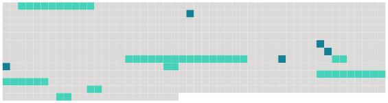

Longueur nb maillons : 12 mentions |
 |
B : [Habilitation des officiers de police judiciaire de la police nationale]
Pour chaque fonctionnaire affecté à un tel emploi, une demande d' [habilitation] est adressée par le chef du service auquel appartient ce fonctionnaire, au procureur général près la cour d'appel dans le ressort de laquelle l'officier de police judiciaire exerce habituellement ses fonctions d'officier de police judiciaire. [3 phrases]
Si l'officier de police judiciaire est affecté dans une unité de la gendarmerie nationale, la demande d' [habilitation] est transmise selon les distinctions prévues aux a, b ou c de l'article R. 14.
Article R15-4
Article R15-5
L'arrêté d' [habilitation] indique les fonctions en vue desquelles [cette habilitation] est accordée et précise qu' [elle] vaut seulement pour le temps pendant lequel l'officier de police exercera lesdites fonctions.
Lorsqu'il envisage de refuser [l'habilitation] , le procureur général en informe l'intéressé, en lui précisant qu'il peut, dans un délai de quinze jours, prendre connaissance de son dossier et être entendu, le cas échéant, avec l'assistance d'un conseil de son choix.
Article R15-6 [1 phrases] L'officier de police judiciaire dont [l'habilitation] a été suspendue reprend de plein droit, à l'expiration de la suspension, l'exercice des attributions attachées à sa qualité. [1 phrases]
Après un retrait, [l'habilitation] ne peut être rendue que dans les formes prévues pour une attribution initiale. |
 |
La ressource peut être téléchargée sur la page Ortolang
Si vous avez des questions ou vous voyez des erreurs, merci d'envoyer un mail à silvia.federzoni89@gmail.com
Site développé par S. Federzoni (contact)